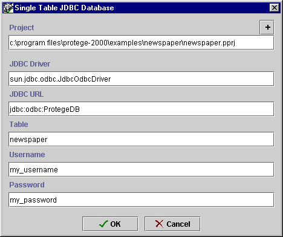

Saving a Database Project
Saving a Database Project

You can save a Protégé-2000 project as a single table in a JDBC database.
Before you do this, you will need to do the following:
- make sure you have a database program installed on your system
- make sure you have a JDBC driver that is compatible with your database and
the version of the Java VM that you are using
- add the driver to Protégé's path by placing the jar file of the driver
in the plugins subdirectory of the Protege-2000 directory.
Note: When a project is saved in a JDBC database, backend changes to
the database (for example, changes to slots, classes, and instances) are
committed as soon as they are made. However, changes to the User Interface
(which is stored in the .pprj file) are not committed until you press the Save
button.
Once you have set up your JDBC database, you can save your Protégé-2000 project as
a database files in one of two ways:
- When the project is first created, by selecting JDBC Database in
the Select Format dialog box.
- By selecting Save in Format... from the Project menu and
then selecting JDBC Database in the Select Format dialog box.
After you have chosen your format, choose the name and location for the
project as follows:
- When you have selected JDBC Database, the Single Table JDBC Database dialog box is displayed:

- To select or change the name or location of the pprj file, enter
the information you want in the Project line of the dialog box. Be sure to give
the file a pprj
extension. To browse for a new location, cllick the
button. If you do not
specify a location for the project, by default, the project is saved in the
directory where Protégé-2000 is installed.
- Enter the name of your JDBC driver in the JDBC Driver line of the
dialog box.
- Enter the URL for your database in the JDBC URL line.
- Protégé-2000 will automatically use the name of the existing pprj
file as the name of the table in the database. If you wish to change this,
type the new name for the database in the Table line of the dialog
box.
- If your database requires a username and/or password, enter these in the
appropriate lines of the dialog box.
- Click OK.
You can store multiple projects in the same database by giving their tables
different names.
Next: Saving an RDF Project
Project Table of Contents